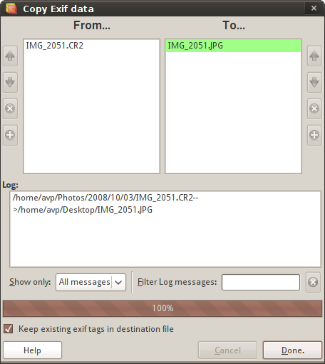

It is typical to lose Exif metadata of original images when constructing a new HDR image from bracketed exposures. You can fix this by doing a mass-copy of Exif metadata to tonemapped images.
To do so, choose Tools > Copy Exif Data... menu item in the main window.

With this dialog you can copy the Exif data contained in a set of files (the sources) into another set of files (the destinations). This is a pairwise, one-to-one data copy, i.e. the first file in the destination list gets the Exif data from the first file in the sources list and so on.
Because Luminance HDR saves tonemapping settings description to Exif comment tag, "Keep existing Exif tags in destination file" checkbox is enabled by default.